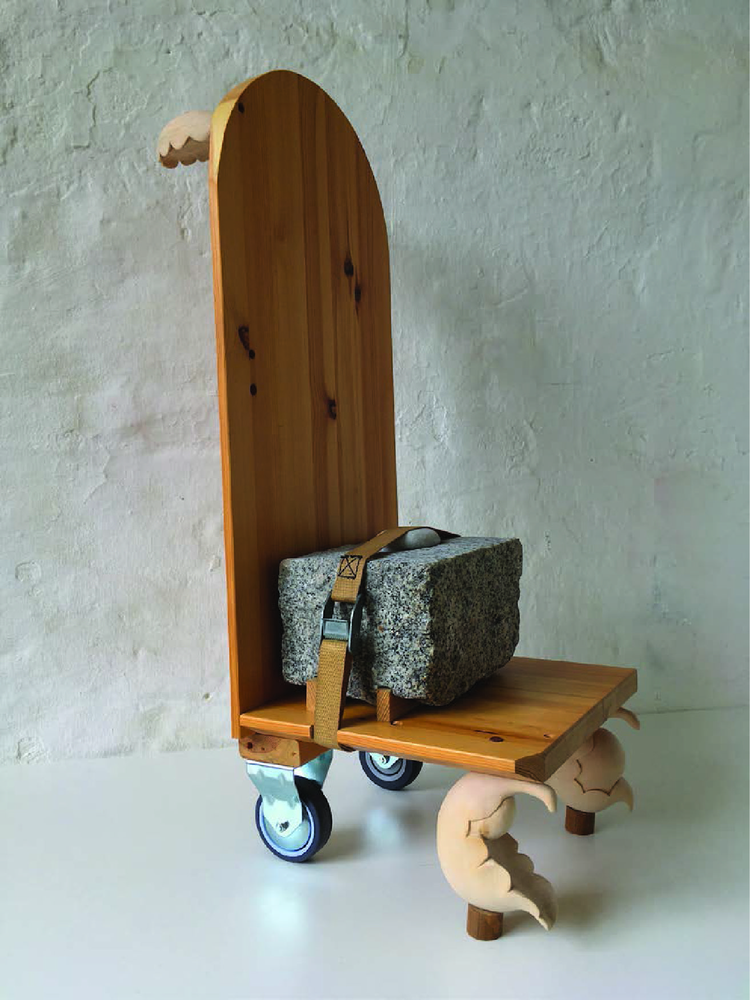
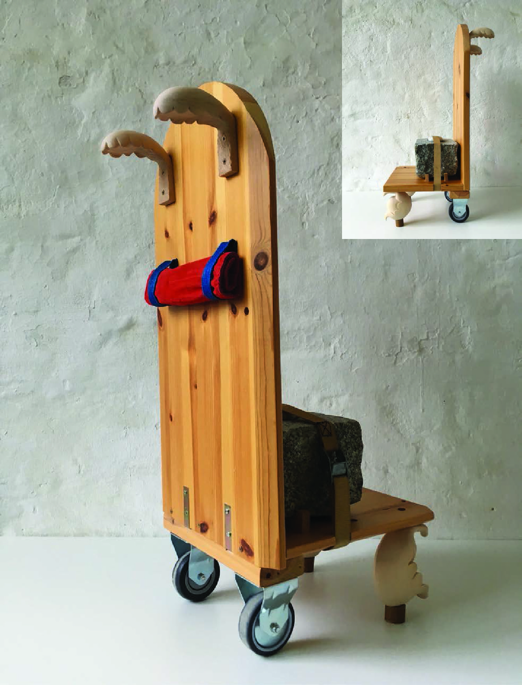

tools of loving touch
A while ago I saved some excerpts from an essay written by someone talking about working with stone. The site has since disappeared (and unfortunately didnt save the authors name), but I managed to save some insights. They spoke about 'Shifting balance and the given order', “ An action completed doesn’t exactly disappear. Something lingers. All actions, whether obviously or not, prepare for a subsequent action. A completed action has something of the sense of an interruption about it because it leaves a residue of potential." Ive often found when carving, the feeling of this residual potential. Its almost as if before an action begins, it is in some sense already successfully completed. . The article explains there is a sense memory left behind when an action passes through the body. It is as if an extra body has been created within the initiating body. This image of an action is the place where the craftsperson’s [sic] body really exists.
I really like this idea of bodies within bodies and have thought a lot about how tools become extensions of these bodies in this space too. The weight of a mallet becomes a prosthetic that requires a shift in balance, and now it’s a choreography of extending, arcing and contracting gestures, all nested inside one another in this space of potential. And so, when working with stone, im often conscious too of how the material receives this dance of bodies and tools all the way down.
A few years ago I made a work which was three pieces, three different wands. The wands were remakes of one I had made when I was 13. For the new ones I used old handles from my grandfathers carpentry tools and found wood. The wands were awkward and I saw them more as intention-recepticles than generators. They held not only my residue but my grandfathers too. I often feel that these performed actions are imbued in the material and so on and on.
Over time ive become more interested in tools themselves and how they focus attention. Where tool surface and material meet is this portal into a kind of landscape of potential. Can also be that the body itself is tool, but somehow ive found the addition of weight and how it destabilizes brings in new ways of being/seeing. Im now interested in making objects which slot into a role and serve some made up purpose. I made a few trolleys a while back, trolley as tool meeting the world. Street surfaces, neighbourhoods, handles, hands arms straps wheels gestures.

